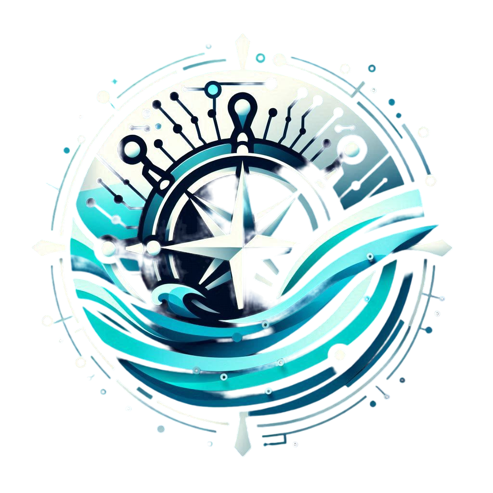
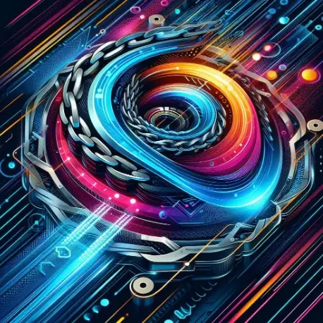
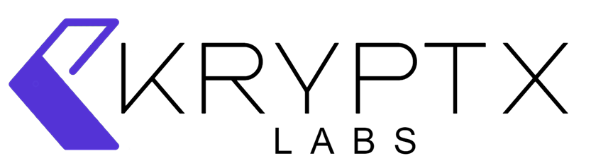
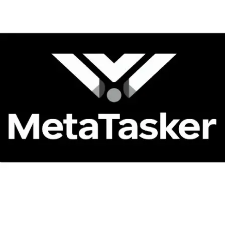

I’m a 15-year-old developer passionate about building transparent and efficient systems. While my primary focus is blockchain development, I also have a strong foundation in web2 technologies. I specialize in Solidity, Rust, Golang, and Vyper for building secure, scalable decentralized applications, and I am equally proficient in Python, JavaScript, TypeScript, Ruby, PHP, C, and C++ for traditional web development.
Beyond the blockchain, I have extensive experience creating dynamic, responsive web applications using modern frameworks like React, Vue.js, and Node.js, while also working with SQL and NoSQL databases like MongoDB and MySQL. I’m passionate about creating full-stack solutions that bridge the gap between web2 and web3, ensuring seamless user experiences and secure applications.
I’m especially driven by the evolution of the Ethereum Virtual Machine (EVM) and Layer 2 solutions, which I integrate into my projects to build practical, real-world applications.
With my diverse experience in both blockchain and web2 technologies, I aim to create applications that not only leverage the power of decentralized networks but also focus on enhancing user experiences and solving real-world problems across various industries.
Recent Work
.jpg) NFTInu
NFTInu
NFTInu is a decentralized platform that lets users rent and access NFTs, such as virtual real estate, gaming items, and digital art. It offers flexible rental models, expanding NFT utility beyond ownership. Using blockchain, NFTInu ensures secure ownership tracking and transparent transactions, making NFTs more accessible and opening up new ways to monetize digital assets.

Cyberport
Cyberport is an advanced shipping navigation system designed to assist vessels and ships in navigating through seas and oceans. The platform not only provides real-time navigation data but also integrates weather forecasting tools to ensure safe and efficient travel. Additionally, Cyberport offers daily maritime news, keeping users informed about the latest events and conditions at sea, ensuring a comprehensive solution for modern maritime operations.
MyIPR Marketplace
© 2024 Maritime Information And Management Web Application: Virtual Cyberport For Maritime Monitoring And Tracking. All rights reserved.
 Legal Aid Certification System (LACS)
Legal Aid Certification System (LACS)
LACS is a decentralized platform that provides legal assistance to individuals who cannot afford lawyer fees. Using blockchain, it securely manages legal aid requests, verifying and recording certifications to ensure data integrity. The platform aims to make legal support more accessible, especially for underserved communities, promoting fairness and reducing barriers to justice.
 AI-Driven Public-Private Partnership Proposal Management System
AI-Driven Public-Private Partnership Proposal Management System
The AI-Driven Proposal Management System simplifies the evaluation of public-private partnership proposals. Using AI algorithms, it automatically matches proposals by analyzing key points and identifying areas of agreement and discrepancy. The system provides a detailed match report to help stakeholders make informed decisions, reducing manual effort, speeding up review times, and improving transparency.

DeFiSyNc
DeFiSyNc enhances DeFi by combining cross-chain liquidity aggregation with AI optimization. It improves slippage rates, reduces transaction costs, and ensures better trade execution by dynamically allocating liquidity across blockchains. The platform aims to boost interoperability while maintaining security, helping users maximize returns with minimal risk.
DeFiSync Bridge
DeFiSync Bridge is a cross-chain platform that enables easy token transfers between Solana and Ethereum networks. It provides a simple interface for moving assets between Solana-based and Ethereum-based projects, improving liquidity and access to DeFi applications. By connecting these two blockchains, DeFiSync Bridge enhances interoperability and scalability.
 ComplianceLink
ComplianceLink
A decentralized compliance engine for DeFi, enabling secure and scalable cross-chain KYC/AML compliance. By integrating the Circle Compliance API, Wormhole protocol, and smart contracts on multiple blockchains like Ethereum and Solana, it ensures global regulatory standards while maintaining decentralization.
NexGuard Insurance
NexGuard is a decentralized insurance platform for DeFi users, leveraging AI for real-time risk assessment and automated claims processing. Built on the Solana blockchain, NexGuard combines advanced machine learning with decentralized physical infrastructure (DePIN) to ensure secure and efficient insurance services. Key features include policy purchase, staking, insurance pools, and AI-powered claims verification.

Kryptx Labs
Decentralized HR Payroll System This system ensures secure and transparent payments by utilizing blockchain technology for transaction tracking. The platform reduces fraud, ensures data integrity, and simplifies payroll processes, benefiting both employees and employers.

MetaTasker
MetaTasker is a blockchain-powered platform that simplifies on-chain employment and identity management. It ensures secure, transparent records for employment, skills, and achievements, allowing employers and workers to track performance and manage contracts in a trustless, efficient system.
- Languages: Solidity, Rust, Golang, Vyper, Python, JavaScript, TypeScript, C++, Ruby, PHP, Java, Swift
- Frameworks & Libraries: React, Vue.js, Node.js, Express, Angular, Next.js, Nuxt.js, Tailwind CSS, Bootstrap, jQuery
- Databases: MongoDB, MySQL, PostgreSQL, Firebase, Redis, DynamoDB
- Blockchain & Smart Contracts: Ethereum, Solana, Polkadot, Wormhole, Hyperledger Fabric, Binance Smart Chain (BSC), Cosmos
- DevOps & Cloud: Docker, Kubernetes
- AI & Machine Learning: TensorFlow, PyTorch, Scikit-learn, OpenAI APIs, NLP, Computer Vision
- Testing & QA: Jest, Mocha, Chai, Cypress, Selenium
- Tools & Platforms: Git, GitHub, GitLab, Bitbucket, Jira, Trello, Postman, Figma, Visual Studio Code
- Web3 Technologies: Web3.js, Ethers.js, IPFS, Truffle, Hardhat, The Graph
- Operating Systems: Linux, macOS, Windows
- Protocols & Standards: REST, GraphQL, gRPC, OpenAPI, OAuth, JWT
Hackathons & Competitions
- ETHKL24 (2024): Secured bounties for innovative blockchain solutions and won a side prize for creating a Layer 2 scaling application using Scroll , ICP and Worldcoin technology.
- Base Chain Hackathon (2024): Won a side prize for developing an innovative solution leveraging the Base chain, focusing on scalability and optimizing decentralized application performance.
- Solana Wormhole Hackathon (2024): Built a cross-chain asset transfer tool leveraging the Wormhole protocol, enhancing interoperability between Solana and Ethereum networks.
- Colosseum Codex: Radar Hackathon (2024): Developed a decentralized data aggregation platform for real-time analytics, focusing on scalability and transparency in DeFi applications.
- My Hackathon Kohort 1 (2023): Participated in designing a Legal Aid Certification System, focusing on integrating automation with user-friendly interfaces to improve access to legal support.


{kind=link}
{kind=link}
{kind=link}
{kind=link}